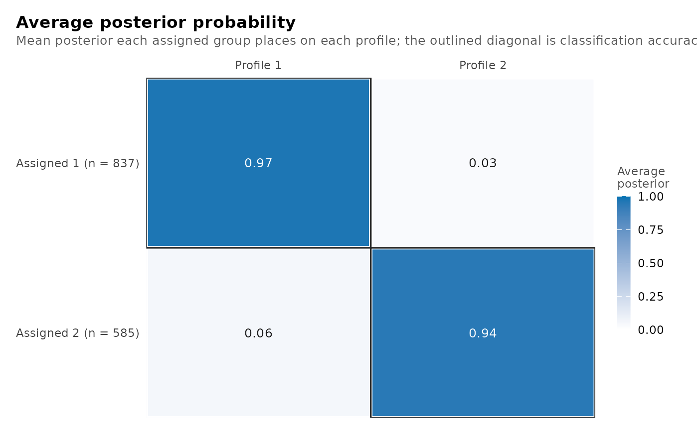

Plot latents results
Source:R/additive-compare.R, R/additive-methods.R, R/compare-models.R, and 11 more
latents-plots.RdEvery result of this package plots with plot(), which returns a ggplot
object to print, save with ggplot2::ggsave() or restyle with
+ ggplot2::theme(). The formerly base-graphics plots of mixture
regressions, pooled imputations and bootstrap tests draw when called,
including inside loops, and return their ggplot invisibly to avoid drawing
twice at the console. The main views also have functions of their own,
whose arguments an editor completes: plot_profiles() (profile means, or
categorical means, medians and modes), plot_responses() (categorical
response probabilities), plot_prevalence() (profile shares within each
group class), plot_diagnostics() (classification quality),
plot_transitions() (transition matrix), plot_enumeration()
(information criteria, classification quality and model-selection evidence
across a grid) and plot_tree() (how profiles split as more are added).
Each draws exactly what the matching plot(x, what = ) draws.
plot_views() lists the views of a fitted model, and "enumeration" and
"tree" for a grid, each with a one-line description; the other grid views
are listed under what below.
Usage
# S3 method for class 'latents_family_enumeration'
plot(
x,
what = c("bic", "aic", "bic_individual"),
main = NULL,
subtitle = NULL,
criterion = NULL,
...
)
# S3 method for class 'multilpa_additive'
plot(
x,
what = c("means", "variances", "intercepts"),
level = 0.95,
main = NULL,
subtitle = NULL,
...
)
# S3 method for class 'latents_comparison'
plot(x, main = NULL, subtitle = NULL, ...)
# S3 method for class 'multilpa_cross_level'
plot(
x,
what = c("profiles", "group_means", "composition"),
main = NULL,
subtitle = NULL,
...
)
# S3 method for class 'multilpa_bootstrap_lrt'
plot(x, main = NULL, subtitle = NULL, palette = NULL, style = NULL, ...)
# S3 method for class 'latents_growth_mixture'
plot(
x,
what = c("trajectories", "individuals", "coefficients", "random", "classification",
"posteriors"),
time = NULL,
facet = FALSE,
persons = 12L,
max_persons = 120L,
spread = 0.8,
level = 0.95,
main = NULL,
subtitle = NULL,
...
)
# S3 method for class 'latents_transition_enumeration'
plot(
x,
what = c("bic", "aic", "bic_individual"),
main = NULL,
subtitle = NULL,
criterion = NULL,
...
)
# S3 method for class 'multilpa_lta'
plot(x, main = NULL, subtitle = NULL, ...)
# S3 method for class 'latents_mixture_regression'
plot(
x,
what = NULL,
predictor = NULL,
level = 0.95,
main = NULL,
subtitle = NULL,
time = NULL,
facet = FALSE,
persons = 12L,
max_persons = 120L,
...
)
plot_profiles(
x,
statistic = c("mean", "median", "mode"),
scale = c("raw", "standardized"),
intervals = TRUE,
labels = TRUE,
data = NULL,
main = NULL,
subtitle = NULL
)
plot_responses(
x,
category = "last",
intervals = TRUE,
labels = TRUE,
data = NULL,
main = NULL,
subtitle = NULL
)
plot_prevalence(x, labels = TRUE, main = NULL, subtitle = NULL)
plot_diagnostics(
x,
what = c("all", "sizes", "posteriors", "entropy", "avepp"),
main = NULL,
subtitle = NULL
)
plot_transitions(x, main = NULL, subtitle = NULL)
plot_tree(x, main = NULL, subtitle = NULL)
# S3 method for class 'multilpa'
plot(
x,
what = c("profiles", "bars", "heatmap", "raincloud", "parallel", "pairs", "responses",
"probabilities", "sequences", "sizes", "entropy", "posteriors", "avepp", "all"),
data = NULL,
scale = c("raw", "standardized"),
category = "last",
labels = TRUE,
intervals = TRUE,
cell_labels = TRUE,
main = NULL,
subtitle = NULL,
statistic = c("mean", "median", "mode"),
...
)
# S3 method for class 'multilpa_enumeration'
plot(
x,
what = c("aic", "bic_groups", "bic_individual", "icl_individual"),
criterion = NULL,
combine = TRUE,
labels = TRUE,
mark_minimum = TRUE,
main = NULL,
subtitle = NULL,
cutoff = 0.8,
using = "bic_groups",
...
)
plot_enumeration(
x,
what = c("aic", "bic_groups", "bic_individual", "icl_individual"),
combine = TRUE,
labels = TRUE,
mark_minimum = TRUE,
main = NULL,
subtitle = NULL,
cutoff = 0.8,
using = "bic_groups"
)
# S3 method for class 'multilpa_covariates'
plot(
x,
what = c("profiles", "bars", "heatmap", "raincloud", "parallel", "pairs", "responses",
"sequences", "sizes", "entropy", "posteriors", "avepp", "all"),
data = NULL,
scale = c("raw", "standardized"),
category = "last",
labels = TRUE,
intervals = TRUE,
cell_labels = TRUE,
main = NULL,
subtitle = NULL,
statistic = c("mean", "median", "mode"),
...
)
plot_views()
# S3 method for class 'latents_pooled'
plot(
x,
what = c("profile", "group", "measurement"),
main = NULL,
subtitle = NULL,
level = NULL,
...
)
# S3 method for class 'multilpa_transitions'
plot(
x,
what = c("transitions", "profiles", "bars", "heatmap", "responses", "sequences",
"sizes", "entropy", "posteriors", "avepp", "all"),
data = NULL,
scale = c("raw", "standardized"),
category = "last",
labels = TRUE,
cell_labels = TRUE,
main = NULL,
subtitle = NULL,
...
)Arguments
- x
The object to plot: a profile, class or transition model for the named fit views and
plot_diagnostics(), an enumeration fromenumerate_classes(),enumerate_lpa()orenumerate_lca()forplot_enumeration()andplot_tree(), a transition fit fromlta()forplot_transitions(). A generallta()fit (occasion-varying transitions, covariates, mover-stayer, second order, weights, ordinal or count indicators) draws only its transition matrix, withplot_transitions()orplot(); a transition or group-class family grid plots withplot(x, what = ).- what
For
plot_diagnostics():"all"(default),"sizes"(effective profile counts),"posteriors"(posterior probability of each case's assigned profile),"entropy"(each case's entropy relative to a flat posterior) or"avepp"(average posterior probability matrix). A noise fit supports"sizes"only;"all"returns that view, and the other diagnostics refuse withlatents_unsupported_noise. Forplot_enumeration(): criterion columns ofas.data.frame(x), such as"bic_groups", or"all"; the default draws AIC, both BICs and ICL over individuals. Or classification quality across the candidates, in the words of a single model's plot:"entropy"(relative entropy),"avepp"(the lowest AvePP, with the cutoff dashed) or"diagnostics"(both), at each level with two or more classes. Or model-selection evidence, none of which selects a model:"deltas"(how much the criterion inusingfell with each added profile and each added group class; seeget_results(x, "deltas")and"knees"),"heatmap"(the criterion over profiles and group classes, above the lowest),"smallest"(the smallest class share, 5% dashed) or"trust"(convergence, boundary and replication of every candidate);"selection"draws all of them and"diagnostics", as a list.- main, subtitle
Title and subtitle.
NULLuses the view's own.- criterion
The former name for enumeration criteria. On a profile grid, use alone or with
what = "enumeration"; other grid families use"bic","aic"or"bic_individual".- ...
Additional arguments. Profile/class plot methods refuse unknown names; methods that ignored them in 0.9.21 warn with
latents_unused_argument, as described below.- level
Confidence level for additive, regression and growth views (default 0.95). On pooled plots, the former name for
what:"profile","group"or"measurement".- palette
For bootstrap plots, a colour vector;
NULLuses the standard histogram and observed-statistic colours.- style
The former bootstrap drawing style; unused with a warning.
- time
For growth/trajectory views, the numeric time column.
NULLuses the first numeric variable in the fitted random or regression design.- facet
For trajectories,
FALSEdraws all classes together;TRUEdraws one panel per class.- persons
For individual trajectories, the number of persons to show (default 12), or a vector of their identifiers.
- max_persons
The maximum observed trajectories behind the class means (default 120); zero hides them.
- spread
For growth trajectories, the random-effect spread of persons around the class curve, from zero (hidden) to less than one; default 0.8.
- predictor
For the fitted mixture-regression view, a numeric predictor in the formula.
NULLuses its first numeric predictor.- statistic
"mean"(default),"median"or"mode". They coincide for continuous indicators; for categorical ones they summarise the fitted probabilities on the numeric category scale, without intervals.- scale
"raw"keeps each indicator in its own units;"standardized"divides its deviation from the observed mean by its observed standard deviation.- intervals
For profile, bar and response views,
TRUEdraws 95% intervals when the fit has standard errors; otherwise the subtitle says why there are none. They are theconf_lowandconf_highofparameter_inference(): a response probability's interval is built on the logit scale.- labels
TRUElabels each series directly;FALSEuses a legend. On sequence views,TRUEblocks the groups by group class under labelled strips.- data
Optional. The data the model was fitted to, used only to compute intervals from a different frame.
- category
Which category's probability to draw:
"last"(default),"first", or a single label or index.- cell_labels
For sequence views,
TRUEprints each assigned profile in its cell while the display is sparse enough to hold the text.- combine
TRUEdraws several criteria as panels of one plot;FALSEreturns one plot per criterion.- mark_minimum
TRUErings each criterion's lowest value among converged candidates. It marks an extremum; it does not select a model. Information criteria only.- cutoff
For
plot_enumeration(what = "avepp"),"diagnostics"or"selection", the AvePP cutoff drawn as a dashed line.- using
For
plot_enumeration(what = "deltas"),"heatmap"or"selection", the information criterion they read (default"bic_groups");"smallest"and"trust"do not use one.
Value
A ggplot object. plot_diagnostics(what = "all"),
plot(fit, what = "all") on a fitted model,
plot_enumeration(combine = FALSE) with several criteria, and the
enumeration views when more than one is asked for (including
"selection") return a latents_plots list of them, which draws every
one when printed.
plot_views() returns a data.frame with one row per view: type (the
value for what), group and description.
Details
Profiles keep one order (largest first), one set of Okabe-Ito colours and one point shape each across every view. The plots need ggplot2, which latents suggests rather than requires.
What plot() draws
Each object takes what = for its views, main and subtitle, and the
arguments named here. Profile/class methods refuse an argument they do not
use with latents_bad_argument; methods that ignored it in 0.9.21 instead
draw with a latents_unused_argument warning, as listed below.
- Fitted profile and class models
From
multilpa(),multilca(),lpa(),lca()and covariate models:"profiles"(default),"bars","heatmap","raincloud","parallel","pairs"(each profile's 95% covariance ellipse),"responses","probabilities"(not for covariate models),"sequences"(fits withtime;cell_labels = TRUEprints the profile in each cell),"sizes","entropy","posteriors","avepp"and"all". The profile views name in a caption any ordinal, count or (for the means) categorical indicator they leave out.- Transition fits
From
lta():"transitions"(default), then"profiles","bars","heatmap","responses","sequences","sizes","entropy","posteriors","avepp"and"all", as point estimates withoutintervalsorstatistic. A generallta()fit takes nowhatand draws its transition matrix.- Enumerations
Criterion columns or
"all"(withcombine,labelsandmark_minimum),"tree", the classification-quality views"entropy","avepp"and"diagnostics"(withcutoff), and the model-selection views"deltas"and"heatmap"(which read the criterion inusing),"smallest"and"trust";"selection"draws those four and"diagnostics". Transition and group-class family grids take"bic"(default),"aic"or"bic_individual".- Additive fits
"means"(each group class's mean with its Wald interval),"variances"(within- beside between-group variances) or"intercepts"(each group's posterior intercept);levelsets the interval.- Cross-level fits
"profiles","group_means"or"composition"(profile shares within each group class).- Mixture regressions
"fitted"(default: the outcome against a numericpredictor, one line per class),"coefficients"or"posteriors";levelsets the intervals. Fits that classify persons (class_level = "group") draw the growth views below instead.- Growth mixtures
"trajectories"(default: class mean trajectories with bands;facet,max_persons,spread),"individuals"(persons: a number or identifiers),"coefficients","random"(predicted random effects with each class's 95% ellipse) or"classification";timenames the variable drawn along,levelthe band.- Pooled imputations
"profile"(default),"group"or"measurement"parameters: each imputation's estimate beside the pooled one with its interval.- Model comparisons, bootstrap tests, diagnostics
One view each: the criteria of each compared model, the simulated null distribution with the observed statistic, and the four views of
plot_diagnostics().
Names from latents 0.9.21
Code written for that release keeps
working. Enumeration plots still take criterion (now what; on a
profile grid what = "enumeration" is the default criteria view), a
pooled fit's plot still takes level (now what), and a bootstrap
test's plot still takes palette (the histogram and observed-line
colours). On an enumeration, criterion with any what other than
"enumeration" is an error of class latents_bad_argument (with
"tree", a warning, as the tree uses no criterion); level together
with what on a pooled fit is an error of the same class.
Errors
latents_missing_package without ggplot2;
latents_bad_argument for an argument the object's plot does not take;
the plots of additive, cross-level, general transition (lta()), growth-mixture,
mixture-regression, pooled, comparison, bootstrap and transition or
group-class family grids instead warn with class
latents_unused_argument and draw, as they ignored such arguments in
0.9.21 (this includes a bootstrap plot's former style);
latents_bad_argument also when a named plot function is given an
object it does not draw;
latents_nothing_to_plot when the fit lacks what a view needs (for
example posteriors or entropy of a one-profile fit, prevalence of a
covariate model, or the case-level views of a centred fit);
latents_unknown_category when category names no category of an
indicator;
latents_no_continuous, latents_no_categorical and latents_no_time
when a view needs indicators or occasions the fit does not have;
latents_unknown_criterion for a criterion not in the grid.
References
Satopaa, V., Albrecht, J., Irwin, D. and Raghavan, B. (2011). Finding a "kneedle" in a haystack: detecting knee points in system behavior. 31st International Conference on Distributed Computing Systems Workshops, 166-171.
Zappia, L. and Oshlack, A. (2018). Clustering trees: a visualization for evaluating clusterings at multiple resolutions. GigaScience, 7(7), giy083.
Examples
plot_views()
#> type group
#> 1 profiles measurement
#> 2 bars measurement
#> 3 heatmap measurement
#> 4 raincloud measurement
#> 5 parallel measurement
#> 6 pairs measurement
#> 7 responses measurement
#> 8 probabilities structure
#> 9 sequences structure
#> 10 transitions structure
#> 11 sizes diagnostics
#> 12 entropy diagnostics
#> 13 posteriors diagnostics
#> 14 avepp diagnostics
#> 15 enumeration selection
#> 16 tree selection
#> 17 all every
#> description
#> 1 Profile means, medians or modes across indicators, one line per profile
#> 2 Profile means as grouped bars from zero, with 95% intervals
#> 3 Profile means in observed standard deviations from the observed mean
#> 4 Each indicator's distribution by assigned profile: density, box, observations
#> 5 Every case as a line across indicators, one panel per profile
#> 6 Scatter-plot matrix with each profile's 95% covariance ellipse
#> 7 Categorical response probabilities, one line per profile
#> 8 Profile prevalence within each group class, the two-level quantity
#> 9 Each group's profile at each occasion, one row per group
#> 10 Estimated transition matrix, one panel per group class (a transition fit)
#> 11 Effective number of cases in each profile, with its share
#> 12 Each case's entropy relative to a flat posterior, by profile
#> 13 Posterior probability of each case's assigned profile, by profile
#> 14 Average posterior probability: assigned profile by posterior profile
#> 15 Information criteria across a candidate grid (plot an enumeration; or name criteria in `what`)
#> 16 How profiles split as more are added (plot an enumeration)
#> 17 Every view above that this fit has the ingredients for, in one call
if (requireNamespace("ggplot2", quietly = TRUE)) {
fit <- multilpa(course_engagement, c("browse", "lectures", "forum_read"),
"student", n_profiles = 2, n_group_classes = 2,
n_starts = 2, seed = 1)
plot_profiles(fit)
plot_diagnostics(fit, what = "avepp")
}
